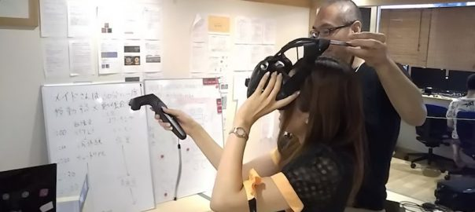
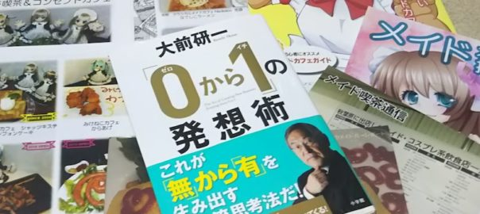

<!DOCTYPE html>
<!--[if IE 7]>
<html class="ie ie7"  prefix="og: http://ogp.me/ns#">
<![endif]-->
<!--[if IE 8]>
<html class="ie ie8"  prefix="og: http://ogp.me/ns#">
<![endif]-->
<!--[if !(IE 7) | !(IE 8)  ]><!-->
<html  prefix="og: http://ogp.me/ns#">
<!--<![endif]-->

<!-- Mirrored from www.maid-cafe.work/blog/date/2017/page/2 by HTTrack Website Copier/3.x [XR&CO'2014], Sun, 23 Mar 2025 07:08:08 GMT -->
<!-- Added by HTTrack --><meta http-equiv="content-type" content="text/html;charset=UTF-8" /><!-- /Added by HTTrack -->
<head>
	<meta charset="UTF-8">
	<meta name="viewport" content="width=device-width">
	<title>2017 | メイドカフェでノマド会公式サイト | Page 2公式サイト</title>
	<link rel="profile" href="http://gmpg.org/xfn/11">
	<link rel="pingback" href="../../../../xmlrpc.php">
	<!--[if lt IE 9]>
	<script src="https://maidnomad.github.io/web/wp-content/themes/maid-nomad/js/html5.js"></script>
	<![endif]-->
	<meta name='robots' content='max-image-preview:large' />
<link rel='dns-prefetch' href='http://fonts.googleapis.com/' />
<link rel="alternate" type="application/rss+xml" title="メイドカフェでノマド会公式サイト &raquo; フィード" href="../../../../feed.html" />
<link rel="alternate" type="application/rss+xml" title="メイドカフェでノマド会公式サイト &raquo; コメントフィード" href="../../../../comments/feed.html" />
<script type="text/javascript">
/* <![CDATA[ */
window._wpemojiSettings = {"baseUrl":"https:\/\/s.w.org\/images\/core\/emoji\/14.0.0\/72x72\/","ext":".png","svgUrl":"https:\/\/s.w.org\/images\/core\/emoji\/14.0.0\/svg\/","svgExt":".svg","source":{"concatemoji":"https:\/\/www.maid-cafe.work\/wp-includes\/js\/wp-emoji-release.min.js?ver=6.4.3"}};
/*! This file is auto-generated */
!function(i,n){var o,s,e;function c(e){try{var t={supportTests:e,timestamp:(new Date).valueOf()};sessionStorage.setItem(o,JSON.stringify(t))}catch(e){}}function p(e,t,n){e.clearRect(0,0,e.canvas.width,e.canvas.height),e.fillText(t,0,0);var t=new Uint32Array(e.getImageData(0,0,e.canvas.width,e.canvas.height).data),r=(e.clearRect(0,0,e.canvas.width,e.canvas.height),e.fillText(n,0,0),new Uint32Array(e.getImageData(0,0,e.canvas.width,e.canvas.height).data));return t.every(function(e,t){return e===r[t]})}function u(e,t,n){switch(t){case"flag":return n(e,"\ud83c\udff3\ufe0f\u200d\u26a7\ufe0f","\ud83c\udff3\ufe0f\u200b\u26a7\ufe0f")?!1:!n(e,"\ud83c\uddfa\ud83c\uddf3","\ud83c\uddfa\u200b\ud83c\uddf3")&&!n(e,"\ud83c\udff4\udb40\udc67\udb40\udc62\udb40\udc65\udb40\udc6e\udb40\udc67\udb40\udc7f","\ud83c\udff4\u200b\udb40\udc67\u200b\udb40\udc62\u200b\udb40\udc65\u200b\udb40\udc6e\u200b\udb40\udc67\u200b\udb40\udc7f");case"emoji":return!n(e,"\ud83e\udef1\ud83c\udffb\u200d\ud83e\udef2\ud83c\udfff","\ud83e\udef1\ud83c\udffb\u200b\ud83e\udef2\ud83c\udfff")}return!1}function f(e,t,n){var r="undefined"!=typeof WorkerGlobalScope&&self instanceof WorkerGlobalScope?new OffscreenCanvas(300,150):i.createElement("canvas"),a=r.getContext("2d",{willReadFrequently:!0}),o=(a.textBaseline="top",a.font="600 32px Arial",{});return e.forEach(function(e){o[e]=t(a,e,n)}),o}function t(e){var t=i.createElement("script");t.src=e,t.defer=!0,i.head.appendChild(t)}"undefined"!=typeof Promise&&(o="wpEmojiSettingsSupports",s=["flag","emoji"],n.supports={everything:!0,everythingExceptFlag:!0},e=new Promise(function(e){i.addEventListener("DOMContentLoaded",e,{once:!0})}),new Promise(function(t){var n=function(){try{var e=JSON.parse(sessionStorage.getItem(o));if("object"==typeof e&&"number"==typeof e.timestamp&&(new Date).valueOf()<e.timestamp+604800&&"object"==typeof e.supportTests)return e.supportTests}catch(e){}return null}();if(!n){if("undefined"!=typeof Worker&&"undefined"!=typeof OffscreenCanvas&&"undefined"!=typeof URL&&URL.createObjectURL&&"undefined"!=typeof Blob)try{var e="postMessage("+f.toString()+"("+[JSON.stringify(s),u.toString(),p.toString()].join(",")+"));",r=new Blob([e],{type:"text/javascript"}),a=new Worker(URL.createObjectURL(r),{name:"wpTestEmojiSupports"});return void(a.onmessage=function(e){c(n=e.data),a.terminate(),t(n)})}catch(e){}c(n=f(s,u,p))}t(n)}).then(function(e){for(var t in e)n.supports[t]=e[t],n.supports.everything=n.supports.everything&&n.supports[t],"flag"!==t&&(n.supports.everythingExceptFlag=n.supports.everythingExceptFlag&&n.supports[t]);n.supports.everythingExceptFlag=n.supports.everythingExceptFlag&&!n.supports.flag,n.DOMReady=!1,n.readyCallback=function(){n.DOMReady=!0}}).then(function(){return e}).then(function(){var e;n.supports.everything||(n.readyCallback(),(e=n.source||{}).concatemoji?t(e.concatemoji):e.wpemoji&&e.twemoji&&(t(e.twemoji),t(e.wpemoji)))}))}((window,document),window._wpemojiSettings);
/* ]]> */
</script>
<style id='wp-emoji-styles-inline-css' type='text/css'>

	img.wp-smiley, img.emoji {
		display: inline !important;
		border: none !important;
		box-shadow: none !important;
		height: 1em !important;
		width: 1em !important;
		margin: 0 0.07em !important;
		vertical-align: -0.1em !important;
		background: none !important;
		padding: 0 !important;
	}
</style>
<link rel='stylesheet' id='wp-block-library-css' href='../../../../wp-includes/css/dist/block-library/style.min84fc.css?ver=6.4.3' type='text/css' media='all' />
<style id='classic-theme-styles-inline-css' type='text/css'>
/*! This file is auto-generated */
.wp-block-button__link{color:#fff;background-color:#32373c;border-radius:9999px;box-shadow:none;text-decoration:none;padding:calc(.667em + 2px) calc(1.333em + 2px);font-size:1.125em}.wp-block-file__button{background:#32373c;color:#fff;text-decoration:none}
</style>
<style id='global-styles-inline-css' type='text/css'>
body{--wp--preset--color--black: #000000;--wp--preset--color--cyan-bluish-gray: #abb8c3;--wp--preset--color--white: #ffffff;--wp--preset--color--pale-pink: #f78da7;--wp--preset--color--vivid-red: #cf2e2e;--wp--preset--color--luminous-vivid-orange: #ff6900;--wp--preset--color--luminous-vivid-amber: #fcb900;--wp--preset--color--light-green-cyan: #7bdcb5;--wp--preset--color--vivid-green-cyan: #00d084;--wp--preset--color--pale-cyan-blue: #8ed1fc;--wp--preset--color--vivid-cyan-blue: #0693e3;--wp--preset--color--vivid-purple: #9b51e0;--wp--preset--gradient--vivid-cyan-blue-to-vivid-purple: linear-gradient(135deg,rgba(6,147,227,1) 0%,rgb(155,81,224) 100%);--wp--preset--gradient--light-green-cyan-to-vivid-green-cyan: linear-gradient(135deg,rgb(122,220,180) 0%,rgb(0,208,130) 100%);--wp--preset--gradient--luminous-vivid-amber-to-luminous-vivid-orange: linear-gradient(135deg,rgba(252,185,0,1) 0%,rgba(255,105,0,1) 100%);--wp--preset--gradient--luminous-vivid-orange-to-vivid-red: linear-gradient(135deg,rgba(255,105,0,1) 0%,rgb(207,46,46) 100%);--wp--preset--gradient--very-light-gray-to-cyan-bluish-gray: linear-gradient(135deg,rgb(238,238,238) 0%,rgb(169,184,195) 100%);--wp--preset--gradient--cool-to-warm-spectrum: linear-gradient(135deg,rgb(74,234,220) 0%,rgb(151,120,209) 20%,rgb(207,42,186) 40%,rgb(238,44,130) 60%,rgb(251,105,98) 80%,rgb(254,248,76) 100%);--wp--preset--gradient--blush-light-purple: linear-gradient(135deg,rgb(255,206,236) 0%,rgb(152,150,240) 100%);--wp--preset--gradient--blush-bordeaux: linear-gradient(135deg,rgb(254,205,165) 0%,rgb(254,45,45) 50%,rgb(107,0,62) 100%);--wp--preset--gradient--luminous-dusk: linear-gradient(135deg,rgb(255,203,112) 0%,rgb(199,81,192) 50%,rgb(65,88,208) 100%);--wp--preset--gradient--pale-ocean: linear-gradient(135deg,rgb(255,245,203) 0%,rgb(182,227,212) 50%,rgb(51,167,181) 100%);--wp--preset--gradient--electric-grass: linear-gradient(135deg,rgb(202,248,128) 0%,rgb(113,206,126) 100%);--wp--preset--gradient--midnight: linear-gradient(135deg,rgb(2,3,129) 0%,rgb(40,116,252) 100%);--wp--preset--font-size--small: 13px;--wp--preset--font-size--medium: 20px;--wp--preset--font-size--large: 36px;--wp--preset--font-size--x-large: 42px;--wp--preset--spacing--20: 0.44rem;--wp--preset--spacing--30: 0.67rem;--wp--preset--spacing--40: 1rem;--wp--preset--spacing--50: 1.5rem;--wp--preset--spacing--60: 2.25rem;--wp--preset--spacing--70: 3.38rem;--wp--preset--spacing--80: 5.06rem;--wp--preset--shadow--natural: 6px 6px 9px rgba(0, 0, 0, 0.2);--wp--preset--shadow--deep: 12px 12px 50px rgba(0, 0, 0, 0.4);--wp--preset--shadow--sharp: 6px 6px 0px rgba(0, 0, 0, 0.2);--wp--preset--shadow--outlined: 6px 6px 0px -3px rgba(255, 255, 255, 1), 6px 6px rgba(0, 0, 0, 1);--wp--preset--shadow--crisp: 6px 6px 0px rgba(0, 0, 0, 1);}:where(.is-layout-flex){gap: 0.5em;}:where(.is-layout-grid){gap: 0.5em;}body .is-layout-flow > .alignleft{float: left;margin-inline-start: 0;margin-inline-end: 2em;}body .is-layout-flow > .alignright{float: right;margin-inline-start: 2em;margin-inline-end: 0;}body .is-layout-flow > .aligncenter{margin-left: auto !important;margin-right: auto !important;}body .is-layout-constrained > .alignleft{float: left;margin-inline-start: 0;margin-inline-end: 2em;}body .is-layout-constrained > .alignright{float: right;margin-inline-start: 2em;margin-inline-end: 0;}body .is-layout-constrained > .aligncenter{margin-left: auto !important;margin-right: auto !important;}body .is-layout-constrained > :where(:not(.alignleft):not(.alignright):not(.alignfull)){max-width: var(--wp--style--global--content-size);margin-left: auto !important;margin-right: auto !important;}body .is-layout-constrained > .alignwide{max-width: var(--wp--style--global--wide-size);}body .is-layout-flex{display: flex;}body .is-layout-flex{flex-wrap: wrap;align-items: center;}body .is-layout-flex > *{margin: 0;}body .is-layout-grid{display: grid;}body .is-layout-grid > *{margin: 0;}:where(.wp-block-columns.is-layout-flex){gap: 2em;}:where(.wp-block-columns.is-layout-grid){gap: 2em;}:where(.wp-block-post-template.is-layout-flex){gap: 1.25em;}:where(.wp-block-post-template.is-layout-grid){gap: 1.25em;}.has-black-color{color: var(--wp--preset--color--black) !important;}.has-cyan-bluish-gray-color{color: var(--wp--preset--color--cyan-bluish-gray) !important;}.has-white-color{color: var(--wp--preset--color--white) !important;}.has-pale-pink-color{color: var(--wp--preset--color--pale-pink) !important;}.has-vivid-red-color{color: var(--wp--preset--color--vivid-red) !important;}.has-luminous-vivid-orange-color{color: var(--wp--preset--color--luminous-vivid-orange) !important;}.has-luminous-vivid-amber-color{color: var(--wp--preset--color--luminous-vivid-amber) !important;}.has-light-green-cyan-color{color: var(--wp--preset--color--light-green-cyan) !important;}.has-vivid-green-cyan-color{color: var(--wp--preset--color--vivid-green-cyan) !important;}.has-pale-cyan-blue-color{color: var(--wp--preset--color--pale-cyan-blue) !important;}.has-vivid-cyan-blue-color{color: var(--wp--preset--color--vivid-cyan-blue) !important;}.has-vivid-purple-color{color: var(--wp--preset--color--vivid-purple) !important;}.has-black-background-color{background-color: var(--wp--preset--color--black) !important;}.has-cyan-bluish-gray-background-color{background-color: var(--wp--preset--color--cyan-bluish-gray) !important;}.has-white-background-color{background-color: var(--wp--preset--color--white) !important;}.has-pale-pink-background-color{background-color: var(--wp--preset--color--pale-pink) !important;}.has-vivid-red-background-color{background-color: var(--wp--preset--color--vivid-red) !important;}.has-luminous-vivid-orange-background-color{background-color: var(--wp--preset--color--luminous-vivid-orange) !important;}.has-luminous-vivid-amber-background-color{background-color: var(--wp--preset--color--luminous-vivid-amber) !important;}.has-light-green-cyan-background-color{background-color: var(--wp--preset--color--light-green-cyan) !important;}.has-vivid-green-cyan-background-color{background-color: var(--wp--preset--color--vivid-green-cyan) !important;}.has-pale-cyan-blue-background-color{background-color: var(--wp--preset--color--pale-cyan-blue) !important;}.has-vivid-cyan-blue-background-color{background-color: var(--wp--preset--color--vivid-cyan-blue) !important;}.has-vivid-purple-background-color{background-color: var(--wp--preset--color--vivid-purple) !important;}.has-black-border-color{border-color: var(--wp--preset--color--black) !important;}.has-cyan-bluish-gray-border-color{border-color: var(--wp--preset--color--cyan-bluish-gray) !important;}.has-white-border-color{border-color: var(--wp--preset--color--white) !important;}.has-pale-pink-border-color{border-color: var(--wp--preset--color--pale-pink) !important;}.has-vivid-red-border-color{border-color: var(--wp--preset--color--vivid-red) !important;}.has-luminous-vivid-orange-border-color{border-color: var(--wp--preset--color--luminous-vivid-orange) !important;}.has-luminous-vivid-amber-border-color{border-color: var(--wp--preset--color--luminous-vivid-amber) !important;}.has-light-green-cyan-border-color{border-color: var(--wp--preset--color--light-green-cyan) !important;}.has-vivid-green-cyan-border-color{border-color: var(--wp--preset--color--vivid-green-cyan) !important;}.has-pale-cyan-blue-border-color{border-color: var(--wp--preset--color--pale-cyan-blue) !important;}.has-vivid-cyan-blue-border-color{border-color: var(--wp--preset--color--vivid-cyan-blue) !important;}.has-vivid-purple-border-color{border-color: var(--wp--preset--color--vivid-purple) !important;}.has-vivid-cyan-blue-to-vivid-purple-gradient-background{background: var(--wp--preset--gradient--vivid-cyan-blue-to-vivid-purple) !important;}.has-light-green-cyan-to-vivid-green-cyan-gradient-background{background: var(--wp--preset--gradient--light-green-cyan-to-vivid-green-cyan) !important;}.has-luminous-vivid-amber-to-luminous-vivid-orange-gradient-background{background: var(--wp--preset--gradient--luminous-vivid-amber-to-luminous-vivid-orange) !important;}.has-luminous-vivid-orange-to-vivid-red-gradient-background{background: var(--wp--preset--gradient--luminous-vivid-orange-to-vivid-red) !important;}.has-very-light-gray-to-cyan-bluish-gray-gradient-background{background: var(--wp--preset--gradient--very-light-gray-to-cyan-bluish-gray) !important;}.has-cool-to-warm-spectrum-gradient-background{background: var(--wp--preset--gradient--cool-to-warm-spectrum) !important;}.has-blush-light-purple-gradient-background{background: var(--wp--preset--gradient--blush-light-purple) !important;}.has-blush-bordeaux-gradient-background{background: var(--wp--preset--gradient--blush-bordeaux) !important;}.has-luminous-dusk-gradient-background{background: var(--wp--preset--gradient--luminous-dusk) !important;}.has-pale-ocean-gradient-background{background: var(--wp--preset--gradient--pale-ocean) !important;}.has-electric-grass-gradient-background{background: var(--wp--preset--gradient--electric-grass) !important;}.has-midnight-gradient-background{background: var(--wp--preset--gradient--midnight) !important;}.has-small-font-size{font-size: var(--wp--preset--font-size--small) !important;}.has-medium-font-size{font-size: var(--wp--preset--font-size--medium) !important;}.has-large-font-size{font-size: var(--wp--preset--font-size--large) !important;}.has-x-large-font-size{font-size: var(--wp--preset--font-size--x-large) !important;}
.wp-block-navigation a:where(:not(.wp-element-button)){color: inherit;}
:where(.wp-block-post-template.is-layout-flex){gap: 1.25em;}:where(.wp-block-post-template.is-layout-grid){gap: 1.25em;}
:where(.wp-block-columns.is-layout-flex){gap: 2em;}:where(.wp-block-columns.is-layout-grid){gap: 2em;}
.wp-block-pullquote{font-size: 1.5em;line-height: 1.6;}
</style>
<link rel='stylesheet' id='twentythirteen-fonts-css' href='http://fonts.googleapis.com/css?family=Source+Sans+Pro%3A300%2C400%2C700%2C300italic%2C400italic%2C700italic%7CBitter%3A400%2C700&amp;subset=latin%2Clatin-ext' type='text/css' media='all' />
<link rel='stylesheet' id='genericons-css' href='../../../../wp-content/themes/maid-nomad/fonts/genericons0778.css?ver=2.09' type='text/css' media='all' />
<link rel='stylesheet' id='twentythirteen-style-css' href='../../../../wp-content/themes/maid-nomad/style4a02.css?ver=2013-07-18' type='text/css' media='all' />
<!--[if lt IE 9]>
<link rel='stylesheet' id='twentythirteen-ie-css' href='https://maidnomad.github.io/web/wp-content/themes/maid-nomad/css/ie.css?ver=2013-07-18' type='text/css' media='all' />
<![endif]-->
<script type="text/javascript" src="../../../../wp-includes/js/jquery/jquery.minf43b.js?ver=3.7.1" id="jquery-core-js"></script>
<script type="text/javascript" src="../../../../wp-includes/js/jquery/jquery-migrate.min5589.js?ver=3.4.1" id="jquery-migrate-js"></script>
<link rel="https://api.w.org/" href="../../../../wp-json/index.html" /><script src='https://www.susumuis.info/?dm=b7d4e3a152b9e9334f9f9583c175856d&amp;action=load&amp;blogid=2&amp;siteid=1&amp;t=927853710&amp;back=https%3A%2F%2Fwww.maid-cafe.work%2Fblog%2Fdate%2F2017%2Fpage%2F2' type='text/javascript'></script>
<!-- Open Graph Meta Data by WP-Open-Graph plugin-->
<meta property="og:site_name" content="メイドカフェでノマド会公式サイト" />
<meta property="og:locale" content="ja" />
<meta property="og:type" content="article" />
<meta property="og:image:width" content="200" />
<meta property="og:image:height" content="200" />
<meta property="og:image" content="" />
<!-- /Open Graph Meta Data -->
<meta name="description" content="秋葉原のメイドカフェをWebエンジニア視点で紹介します" /><!-- /susumuis description --><meta name="google-site-verification" content="7Cm0zdOb7StBezXSHk6MuGxiNg8PljXeYq2-ECSwPhk" />
<style type="text/css">.recentcomments a{display:inline !important;padding:0 !important;margin:0 !important;}</style>
<!-- BEGIN: WP Social Bookmarking Light HEAD --><script>
    (function (d, s, id) {
        var js, fjs = d.getElementsByTagName(s)[0];
        if (d.getElementById(id)) return;
        js = d.createElement(s);
        js.id = id;
        js.src = "http://connect.facebook.net/en_US/sdk.js#xfbml=1&version=v2.7";
        fjs.parentNode.insertBefore(js, fjs);
    }(document, 'script', 'facebook-jssdk'));
</script>
<style type="text/css">.wp_social_bookmarking_light{
    border: 0 !important;
    padding: 10px 0 20px 0 !important;
    margin: 0 !important;
}
.wp_social_bookmarking_light div{
    float: left !important;
    border: 0 !important;
    padding: 0 !important;
    margin: 0 5px 0px 0 !important;
    min-height: 30px !important;
    line-height: 18px !important;
    text-indent: 0 !important;
}
.wp_social_bookmarking_light img{
    border: 0 !important;
    padding: 0;
    margin: 0;
    vertical-align: top !important;
}
.wp_social_bookmarking_light_clear{
    clear: both !important;
}
#fb-root{
    display: none;
}
.wsbl_twitter{
    width: 100px;
}
.wsbl_facebook_like iframe{
    max-width: none !important;
}
</style>
<!-- END: WP Social Bookmarking Light HEAD -->
	<style type="text/css" id="twentythirteen-header-css">
			.site-header {
			background: url(../../../../wp-content/uploads/2015/12/cropped-P_20151212_213249-1-1-5.jpg) no-repeat scroll top;
			background-size: 1600px auto;
		}
			.site-title,
		.site-description {
			color: #dd3333;
		}
		</style>
	<link rel="icon" href="../../../../wp-content/uploads/sites/2/2015/12/cropped-P_20151212_213249-1-32x32.jpg" sizes="32x32" />
<link rel="icon" href="../../../../wp-content/uploads/sites/2/2015/12/cropped-P_20151212_213249-1-192x192.jpg" sizes="192x192" />
<link rel="apple-touch-icon" href="../../../../wp-content/uploads/sites/2/2015/12/cropped-P_20151212_213249-1-180x180.jpg" />
<meta name="msapplication-TileImage" content="https://maidnomad.github.io/web/wp-content/uploads/sites/2/2015/12/cropped-P_20151212_213249-1-270x270.jpg" />
		<style type="text/css" id="wp-custom-css">
			/*
ここに独自の CSS を追加することができます。

詳しくは上のヘルプアイコンをクリックしてください。
*/
h1 {
font-size: 40px;
}

ul#organizer_list-thumbnail,
ul#maidnomad-maid-thumbnail{
list-style-type: none;
}

ul#organizer_list-thumbnail li,
ul#maidnomad-maid-thumbnail li {
display: inline;
}

		</style>
		</head>

<body class="archive date paged paged-2 date-paged-2 single-author sidebar">
	<div id="page" class="hfeed site">
		<header id="masthead" class="site-header" role="banner">
			<a class="home-link" href="../../../../index.html" title="メイドカフェでノマド会公式サイト" rel="home">
				<h1 class="site-title">メイドカフェでノマド会公式サイト</h1>
				<h2 class="site-description">メイドカフェでノマドワークの素晴らしさを世の中に広げる活動をしています</h2>
			</a>

			<div id="navbar" class="navbar">
				<nav id="site-navigation" class="navigation main-navigation" role="navigation">
					<h3 class="menu-toggle">Menu</h3>
					<a class="screen-reader-text skip-link" href="#content" title="Skip to content">Skip to content</a>
					<div class="menu-menu-1-container">
    <ul class="nav-menu">
        <li id="menu-top" class="menu-item menu-item-home"><a href="../../../../index.html">TopPage</a></li>
        <li class="menu-item menu-item-has-children"><a href="javascript:void(0)">活動</a>
            <ul class="sub-menu">
                <li class="menu-item"><a target="_blank" rel="noopener" href="https://maid-cafe-nomad.connpass.com/">イベント告知・申込み (外部サイト)</a></li>
                <li class="menu-item"><a target="_blank" rel="noopener" href="https://maid-cafe-nomad.slack.com/">Slack (外部サイト)</a></li>
            </ul>
        </li>
        <li id="menu-information" class="menu-item menu-item-has-children"><a href="javascript:void(0)">Information</a>
            <ul class="sub-menu">
                <li class="menu-item"><a href="../../../../information/maidnomad_info.html">メイドカフェ店舗様向けノマド会のご紹介</a></li>
                <li class="menu-item"><a href="../../../../information/maidcafe_info.html">ノマドに最適なメイドカフェ情報</a></li>
            </ul>
        </li>
        <li id="menu-organization" class="menu-item menu-item-has-children"><a href="javascript:void(0)">運営</a>
            <ul class="sub-menu">
                <li class="menu-item"><a href="../../../../organization.html">運営体制</a></li>
                <li class="menu-item"><a href="../../../../organization/maid_profile/index.html" aria-current="page">メイドさん紹介</a></li>
                <li class="menu-item"><a href="../../../../organization/organizers_profile/index.html">イベントオーガナイザー紹介</a></li>
            </ul>
        </li>
        <li class="menu-item"><a target="_blank" rel="noopener" href="https://photos.app.goo.gl/B94dVMytZ5ypwatq1">Gallery</a></li>
        <li id="menu-blog" class="menu-item"><a href="../../../../blog.html">ブログ</a></li>
    </ul>
</div>

<script type="text/javascript">
    
    var current_url = jQuery(location).attr('pathname');
    if (current_url == "../../../../index.html") {
        jQuery("#menu-top").addClass("current-menu-ancestor");
    } else if (current_url.indexOf("/information") != -1) {
        jQuery("#menu-information").addClass("current-menu-ancestor");
    } else if (current_url.indexOf("/organization") != -1) {
        jQuery("#menu-organization").addClass("current-menu-ancestor");
    } else if (current_url.indexOf("/blog") != -1) {
        jQuery("#menu-blog").addClass("current-menu-ancestor");
    }
</script>									</nav><!-- #site-navigation -->
			</div><!-- #navbar -->
		</header><!-- #masthead -->

		<div id="main" class="site-main">
	<div id="primary" class="content-area">
		<div id="content" class="site-content" role="main">

					<header class="archive-header">
				<h1 class="archive-title">Yearly Archives: 2017</h1>
			</header><!-- .archive-header -->

										
<article id="post-491" class="post-491 post type-post status-publish format-standard has-post-thumbnail hentry category-3">
	<header class="entry-header">
				<div class="entry-thumbnail">
					</div>
		
				<h1 class="entry-title">
			<a href="../../../2017/491.html" rel="bookmark">#メイドプログラミング スクールこと「Made in Maid Family」参加レポート</a>
		</h1>
		
		<div class="entry-meta">
			<span class="date"><a href="../../../2017/491.html" title="Permalink to #メイドプログラミング スクールこと「Made in Maid Family」参加レポート" rel="bookmark"><time class="entry-date" datetime="2017-09-30T23:47:28+09:00">2017年9月30日</time></a></span><span class="categories-links"><a href="../../../category/%e3%82%a4%e3%83%99%e3%83%b3%e3%83%88%e5%a0%b1%e5%91%8a.html" rel="category tag">イベント報告</a></span><span class="author vcard"><a class="url fn n" href="../../../author/susumuis.html" title="View all posts by susumuis" rel="author">susumuis</a></span>					</div><!-- .entry-meta -->
	</header><!-- .entry-header -->

		<div class="entry-content">
		<h2>2017年9月16日 渋谷にメイドプログラミングスクール開校</h2>
<p>「世界初！　メイドさんと一緒に成長できるVR開発の為のプログラミングスクール」<a href="http://site-1213930-2331-5760.strikingly.com/">Maid in Maid Family</a> が9月16日開校しました。</p>
<p>メイドさん x ITを絡めた勉強会としては、<a href="../../../../2017/359.html">Androidの会秋葉原支部・橙幻郷</a>のコラボレーションに続くもので、定期開設の教室としては<strong>「世界初」</strong>でしょう。開校以前からメディアへの露出も多く会ったため、<a href="http://blog.livedoor.jp/kaigainoomaera/archives/50823470.html">海外からの反応</a>もあるようです。ムーブメントですね。</p>
<p>日頃メイドカフェでノマドワークをしている自分の元にも情報が入っていたので、開校当日、参加してきました。</p>
<h2>ビル休日用通用口から601を呼び出して入る</h2>
<p><a href="../../../../wp-content/uploads/sites/2/2017/09/DSC_0698.html"> </a> <a href="../../../../wp-content/uploads/sites/2/2017/09/DSC_0725.html"></a></p>
<p>JR渋谷駅新南口近く。サイトに記された会場に行くと、ビル（一階は郵便局）の入口が閉ざされていました。休日は裏の通用口から入るそうです。このように案内は立てられていましたが、ドアは開いていません。「<strong>601</strong>」で呼び出しをして開けて貰う必要があります。エレベーターで6階に上がって左側に教室の入り口があります。</p>
<h2>「おかえりなさいませ先輩」</h2>
<p>メイドさんは「一緒に勉強をする同級生」という設定なので、「おかえりなさいませ先輩」ということになるそうです。受付をして、名札を書いてむねに付けます。取材も入っている関係で「写真に写ってもいいよ」という人は名札に印の花を付けます。</p>
<p>教室はお座敷タイプで靴を脱いで上がります。「メイドさんが畳に座っている」という、メイドカフェファンとしては落ち着かない光景です。（飲食店であるメイドカフェでは、風営法の関係でメイドさんは決し座ることはない）</p>
<p><a href="../../../../wp-content/uploads/sites/2/2017/09/DSC_0713.html"></a>  <a href="../../../../wp-content/uploads/sites/2/2017/09/DSC_0699.html"></a></p>
<p>コワーキングスペース利用者はお座敷で、スクール生徒は周囲の机席に座ります。椅子にはメイドさん用の印がありそれ以外の席に座ります。</p>
<h2>メイドさんとVR体験</h2>
<p>VRをスクールのテーマとしていて、ヘッドセットを装着してVR体験をすることができます。メイドさんが「2次元」ではなく、異次元世界に行ってしまっていました＼(^o^)／</p>
<p><a href="../../../../wp-content/uploads/sites/2/2017/09/DSC_0711.html"></a> <a href="../../../../wp-content/uploads/sites/2/2017/09/DSC_0715.html"></a></p>
<p>初回はプログラミングせず、<a href="https://suite.styly.cc/">STYLY</a> というWebサービスを利用してVR空間を自作することを学びます。</p>
<p><a href="../../../../wp-content/uploads/sites/2/2017/09/DSC_0703.html"> </a><a href="../../../../wp-content/uploads/sites/2/2017/09/DSC_0705.html"></a></p>
<figure id="attachment_512" aria-describedby="caption-attachment-512" style="width: 283px" class="wp-caption alignright"><a href="../../../../wp-content/uploads/sites/2/2017/09/1f6f1c05c351b403d88f8f15cf381cc2.html"></a><figcaption id="caption-attachment-512" class="wp-caption-text">いしがみ作「VRでノマド会」</figcaption></figure>
<p>STYLYの操作は簡単ですが、上下左右、前後、拡大縮小、回転、複雑な物体の操作をしなければならないため、結構複雑です。</p>
<p>「これはどうするのかな？」「ああ、こうすのか？」</p>
<p>と自分で見つけたり、周囲の「先輩」に教えてもらったりしてなんとか独自の空間を作ってみます。</p>
<p>そうこうしていると、隣のメイドさんが「これどうするの？」と聞いてきます。さっき自分が苦戦したばかりのところなので、「こうやるんだよ」と教えてあげたり一緒に考えたりすることができます。</p>
<p><a href="../../../../wp-content/uploads/sites/2/2017/09/DSC_0700.html"></a>  <a href="../../../../wp-content/uploads/sites/2/2017/09/DSC_0704.html"></a></p>
<p>ちゃんと勉強できましたよ！</p>
<h2>「メイドさんのいる場所」には素晴らしい人が集まる法則</h2>
<p>コワーキングエリアで何やら盛り上がっています。この日は未来研究をしている先生や、ビットコインの技術者など、個性的な方が集まっていました。メイドさんの周りで、週末に技術的な談笑をする。ときにはメイドさんそっちのけで話に夢中になってしまいました。</p>
<p><a href="../../../../wp-content/uploads/sites/2/2017/09/DSC_0723.html"> </a><a href="../../../../wp-content/uploads/sites/2/2017/09/DSC_0718.html"></a></p>
<p>これは私達「メイドカフェでノマド会」にもある特徴ですが、なぜだか<strong>「メイドさんがいる場所に集まるIT関係の人は素晴らしい人が多い」</strong>ということがあります。これは何故だか分かりませんが、新しいことに対する探求精神が旺盛なのかもしれません。</p>
<h2>仕事できたかと言うと……？</h2>
<p>この日コワーキングでは参加者同士の談笑が楽しすぎて、事務作業という感じではありませんでした。土曜日だったこともあるでしょう。ノマド会でも平日の昼間はガチで仕事をしていますが、夜や週末に開催する時は談笑が中心になります。ノマド会との違いは談笑にメイドさんが入ってくることでしょう。</p>
<p><strong>「コワーキング」</strong>という名前が適切なのかは分かりませんが、週末にIT関係者が集まるサロンとして良いと思います。</p>
<p>なお、こちら「メイドカフェでノマド会」としては、「仕事ができない」となってしまうと存在意義が瓦解してしまうため、平日昼開催のメイドカフェでノマド会は集中して仕事ができる空間としてのコンセプトを大切にしています。</p>
<h2>今後に期待すること</h2>
<p>&nbsp;</p>
<p><a href="../../../../wp-content/uploads/sites/2/2017/09/DSC_0724.html"> </a><a href="../../../../wp-content/uploads/sites/2/2017/09/DSC_0721.html"></a></p>
<p><a href="https://prtimes.jp/main/html/rd/p/000000007.000021024.html">プレスリリース</a>では</p>
<blockquote><p>GIFTED AGENT株式会社（本社：東京都渋谷区、代表取締役社長：河崎純真）は、就労移行支援施設GIFTED ACADEMYの利用者を主体としたプロジェクト「MadeInMaidFamily（メイド・イン・メイド・ファミリー）」を開始いたします。」</p></blockquote>
<p>とありましたが、会社の事業というよりは関係者一人ひとりが手作りで運営をしているように見えます。まだ始まったばかりなので、運営方法などは参加者の意見を聞いて、改善をしていく途上でもあるでしょう。僕もメイドさんの自己紹介があった方がいいのではないかなど提案をさせていただいたので取り入れられているかもしれません。</p>
<p>10月からは参加費が3000円となり、 10/07(土)、10/14(土)、10/21(土)、10/28(土)と毎週開催することも決まっているようです。参加申し込み画面へは<a href="http://site-1213930-8172-5597.strikingly.com/">公式サイト</a>で「イベント情報」をクリックして進むことができます。</p>
<p>メイドさんは、現役のメイドさんや経験者というわけでもなさそうです。ここらへんは、現役のメイドカフェ勤務者としてプライドの高い「メイドさん」から見たら歯がゆさもしれませんが、毎週参加者に接して行くことによってメイドさんとしての能力も磨かれていくのでしょう。</p>
<p>世間では「メイド」というと怪しい、アンダーグラウンドなイメージがあって、メイドさんや<a href="../../../2016/246.html">メイドカフェファンは冷たい目を受ける</a>こともありますが、若者とIT文化の中心である「渋谷」の地で「メイドイベントをやってみるか！」と企画して実行できてしまったことは、時代が変わってきていると思います。</p>
<p>IT系の人たちは先見性があって偏見がないので、女性の方はメイド服を着ることが「恥ずかしい」ことではなく「可愛い」「憧れ」のメイド服を着ることを楽しんでいるように見えることはとても良いことだと思います。</p>
<h2>ノマド会は勉強会イベントをやらないのか</h2>
<p>メイドカフェでノマド会も、11月から12月頃を目処に勉強会イベントの準備をしています。</p>
<p>こちらは「メイドさん」ではなく「メイドカフェ」にリスペクトしているので、違った切り口にはなると思います。例えば、メイドさんは「現役」または「元ベテランメイド」であることにこだっていますし、既存のメイドカフェ店舗を応援するために必ずメイドカフェ店舗を絡めて企画する予定です。</p>
<p>メイドさんがいる空間は「楽しい」です。しかし、あえて「楽しい」ことを強調せず「仕事が集中できる空間」としているのがこちらのコンセプトです。メイドさんには極めて真面目な感じにお給仕してもらいます。</p>
<p>メイドカフェには「萌え萌えキュン」や「クラシカル系」「魔法」「戦国」など様々なコンセプトがあります。メイド x ITでも、「楽しい」系と「真面目」系のバリエーションがあって良いと思っています。</p>
<p>文化の発展にはバリエーションと多様性が必要です。メイドプログラミングスクールと、メイドカフェでノマド会、それぞれの道を突き進み、互いに切磋琢磨して良い文化が作れていけることを強く望んでいます。</p>
<div class='wp_social_bookmarking_light'>        <div class="wsbl_hatena_button"><a href="http://b.hatena.ne.jp/entry/https://maidnomad.github.io/web/blog/2017/491" class="hatena-bookmark-button" data-hatena-bookmark-title="#メイドプログラミング スクールこと「Made in Maid Family」参加レポート" data-hatena-bookmark-layout="simple-balloon" title="このエントリーをはてなブックマークに追加"> </a><script type="text/javascript" src="http://b.hatena.ne.jp/js/bookmark_button.js" charset="utf-8" async="async"></script></div>        <div class="wsbl_facebook_like"><div id="fb-root"></div><fb:like href="../../../2017/491.html" layout="button_count" action="https://maidnomad.github.io/web/blog/date/2017/page/like" width="100" share="false" show_faces="false" ></fb:like></div>        <div class="wsbl_twitter"><a href="https://twitter.com/share" class="twitter-share-button" data-url="https://maidnomad.github.io/web/blog/2017/491" data-text="#メイドプログラミング スクールこと「Made in Maid Family」参加レポート" data-lang="en">Tweet</a></div></div>
<br class='wp_social_bookmarking_light_clear' />
<script async src="http://pagead2.googlesyndication.com/pagead/js/adsbygoogle.js"></script>
<!-- maid-cafe.work記事したレクタングル -->
<ins class="adsbygoogle"
     style="display:inline-block;width:336px;height:280px"
     data-ad-client="ca-pub-4600091038664361"
     data-ad-slot="1395210534"></ins>
<script>
(adsbygoogle = window.adsbygoogle || []).push({});
</script>			</div><!-- .entry-content -->
	
	<footer class="entry-meta">
					<div class="comments-link">
				<a href="../../../2017/491.html#respond"><span class="leave-reply">Leave a comment</span></a>			</div><!-- .comments-link -->
		
			</footer><!-- .entry-meta -->
</article><!-- #post -->
							
<article id="post-417" class="post-417 post type-post status-publish format-standard hentry category-6">
	<header class="entry-header">
		
				<h1 class="entry-title">
			<a href="../../../2017/417.html" rel="bookmark">「メイドプログラミングスクール」に期待すること</a>
		</h1>
		
		<div class="entry-meta">
			<span class="date"><a href="../../../2017/417.html" title="Permalink to 「メイドプログラミングスクール」に期待すること" rel="bookmark"><time class="entry-date" datetime="2017-09-13T21:57:20+09:00">2017年9月13日</time></a></span><span class="categories-links"><a href="../../../category/%e3%82%b3%e3%83%a9%e3%83%a0.html" rel="category tag">コラム</a></span><span class="author vcard"><a class="url fn n" href="../../../author/susumuis.html" title="View all posts by susumuis" rel="author">susumuis</a></span>					</div><!-- .entry-meta -->
	</header><!-- .entry-header -->

		<div class="entry-content">
		<h2>はじめに</h2>
<p>最近、Web上のとある記事について、深く考えていました。<br />
その記事は、一見するとメイドカフェと水商売と風俗を同列に書いているので、読解力が低い人には誤解される恐れがあると思います。</p>
<p>そのため、<strong>SNS上ではなるべく拡散しないようにしていました</strong>。</p>
<p>誤解した人によって、（18歳未満のバイトも含む）メイドさんがセクハラの被害にあう恐れがあるからです。</p>
<p><strong>リツイートしていた知り合いにはリツイートを止めてもらうようにお願いすらしました。</strong></p>
<p>しかし、このブログの読者の方は、誤解しない人たちだと信じているので、敢えて書こうと思います。</p>
<h2>問題の記事</h2>
<p>問題の記事はこちらです。</p>
<p><a href="https://note.mu/marukidosudo/n/n7939be53c465" target="_blank" rel="noopener noreferrer" data-ft="{&quot;tn&quot;:&quot;-U&quot;}" data-lynx-mode="async" data-lynx-uri="https://l.facebook.com/l.php?u=https%3A%2F%2Fnote.mu%2Fmarukidosudo%2Fn%2Fn7939be53c465&amp;h=ATND3KP0wn_mY8y1kW4OGsMX_bYrirKiCU7_NeSXigjN1jwXNItbeuUB6RNrmOlS50RJC7wYtiFdpIv2kUNQ1-Np7Urw0eHp9u2vkuSS6HaiCXrgbgLsEgdYbZjzDEkiYKUsWwEc7fKnXRijE61uH6pWy1fpke5W50i2Ys4-x7LufBeeq8SSjMsySliErOssqxb0WKklWE2RIjjnmu9yIlf3dPRTrM9wQXqJGTmsl7HL-40IgRBkGywDaqePUauZ-e-BhlsVQAJpYWhg-v-zAF4m7ucgwr5ErS3JYa98qQ">メイドプログラミング教室がアリだと思う理由と女子の貧困｜マルキド｜note（ノート）</a></p>
<p>書き方が過激なので、女性の方、メイドカフェ関係者の方は怒りを感じられる方もいるかもしれません。僕も、怒りを覚えた一人です。しかし、なぜか、冷静になって読みたいと思いました。</p>
<p>そして、物凄い一生懸命考えました。そして分かりました。</p>
<h2>ものすごい考えてわかったこと</h2>
<p>この記事の筆者は「弱者」に訴えようとしています。</p>
<p>怒りを抑えて、視点を変えて読んでみましょう。</p>
<p>例えば自分がキャバ嬢だったとします。夜遅くまで働かなきゃいけない。<br />
指名を取らなきゃいけないプレッシャーがある。<br />
しかも、いつまでもこの仕事ができるか分からない。</p>
<p>しかし、もしかしたら家庭の事情、「貧困」、なんらかの理由でその世界に入ってしまったのかもしれません。</p>
<p>そこへ筆者が訴える核心は次だと思います。</p>
<blockquote><p>もう女子は可愛さや愛嬌だけでは稼げない。<br />
ぶっちゃけ穴で稼いでハマったら女子は終わりだ。</p></blockquote>
<p><strong>敢えて下品な言葉を使うことで</strong>、痛烈に訴えているのです。</p>
<p>自分が言われてると仮定すると「ガーン」と頭を打ち抜かれたような思いになります。</p>
<h2>メイドプログラミングスクールとは</h2>
<p>「メイドプログラミングスクール」は、僕は関係していないですが、最近<a href="http://www.itmedia.co.jp/news/articles/1709/06/news060.html">ITMediaにも取り上げられ</a>、とても盛り上がっています。</p>
<p>スクールの人たちの問題提起の一つ</p>
<blockquote><p>「メイドさんから転職しようとしても、再就職先を探すのは難しいのが今の社会の現実です。」</p></blockquote>
<p>というのがあります。</p>
<p>この部分、メイドカフェ関係者の方は違和感を覚えるかもしれません。</p>
<p>メイドさんは、普段は学生であったり、一般の企業で働いている方が多いです。<br />
国家資格や、ITやデザイン等の特殊スキルを持たれている方もいます。</p>
<p>もちろんそうでない方もいますが、もはや、<strong>メイドだからどうこうではない</strong>と、自分は思っています。</p>
<p>引用した記事にしても、<strong>メイドを無理やり「弱者」になぞらえるのは、違うと思います。</strong></p>
<p>しかし、メイドカフェといっても非常に多いので、人によっては本当に「貧困」で助けを求めている人もいるかもしれません。<strong>メイドとかキャバとかは関係ありません</strong>。人には強い人、弱い人それぞれいるのです。</p>
<p>不幸な道に足を踏み入れてしまった弱い人、あるいは、そうなる手前の人の、受け皿となることを、メイドプログラミングスクールに期待したいと思います。</p>
<h2>メイドプログラミングスクールに期待すること</h2>
<p>そこで、次に気をつけなければならないのは、同じ罠にはまらないことだと思います。</p>
<p>自分は関係者ではありませんが、<strong>メイドプログラミングスクールはキャバクラにはなってほしくない</strong>と願っています（キャバクラを悪く言っているのではなく、<strong>プログラミングは歓楽的な場で接待されながらするものではない</strong>という意味です）。参加される方、主催者側は、真剣にITに取り組んで欲しいと思っています。</p>
<p>本当に「弱者」「貧困」を抜け出したくて、メイドさんに応募する女性もいるかもしれません。そういうこともあるので、<strong>メイドさんを甘やかすばかりではなく、時には厳しく、正しくIT業界で働く道を教えてあげてあげて欲しい</strong>と思います。</p>
<p>実は運営されている方にお会いしたことがあるのですが、非常に真面目な方なので、きっと大丈夫だと思います。</p>
<p>僕はこの方面のことはよく知らないので、ノマド会が大きくなったとしてもやらないと思います。ずるいですが。</p>
<p><a href="https://maid-cafe-nomad.connpass.com/">メイドカフェでノマド会</a>はどちらかと言うと、<strong>「自立」した人の集まり</strong>です。</p>
<p>できれば、<strong>スクールを活用して「自立」を獲得した人たちが、いずれ、ノマド会に参加してくれること切に願っています。</strong></p>
<h2>貧困と愚かさについて</h2>
<p>そう言えば、最近この本を読みました。僕たちは<strong>貧しい人は愚かだから貧しい</strong>のだと思いがちです。しかし、ホームレスに生活費を手渡すと、皆職業に就いてしまったという実験結果があります。人は愚かだから<strong>貧しくなるのではなく、貧しいと愚かになる</strong>ようです。詳しくは本を読んで下さい。</p>
<p><iframe loading="lazy" style="width: 240px; height: 240px;" src="http://rcm-fe.amazon-adsystem.com/e/cm?lt1=_blank&amp;bc1=000000&amp;IS2=1&amp;bg1=FFFFFF&amp;fc1=000000&amp;lc1=0000FF&amp;t=esuai-22&amp;o=9&amp;p=8&amp;l=as4&amp;m=amazon&amp;f=ifr&amp;ref=as_ss_li_til&amp;asins=4163906576&amp;linkId=7a860a325b0e859b07f9845c6fe532ba" width="300" height="150" frameborder="0" marginwidth="0" marginheight="0" scrolling="no"></iframe></p>
<h2>知識労働者の時代とメイドカフェノマド</h2>
<p>読書の話としてはもう一つ、最近、メイドカフェノマドとは何かと考えていたら、突然「ネクスト・ソサエティ」ではないかという言葉が頭をよぎったので、この本を読みました。</p>
<p>知識労働者の時代では資本とは、会社とか、お金とか設備ではなく、知識にあるそうです。つまり、会社に縛られずに働くことがスタンダードとなっていくのでしょう。そこに必要なのは「<a href="https://maid-cafe-nomad.connpass.com/">メイドカフェでノマド会</a>」のようなコミュニティじゃないかと思いました。いずれ、詳しく掘り下げてみようと思います。</p>
<p><iframe loading="lazy" style="width: 240px; height: 240px;" src="http://rcm-fe.amazon-adsystem.com/e/cm?lt1=_blank&amp;bc1=000000&amp;IS2=1&amp;bg1=FFFFFF&amp;fc1=000000&amp;lc1=0000FF&amp;t=esuai-22&amp;o=9&amp;p=8&amp;l=as4&amp;m=amazon&amp;f=ifr&amp;ref=as_ss_li_til&amp;asins=4478190453&amp;linkId=9ad043223504f6e048210a04b9d71b62" width="300" height="150" frameborder="0" marginwidth="0" marginheight="0" scrolling="no"></iframe></p>
<div class='wp_social_bookmarking_light'>        <div class="wsbl_hatena_button"><a href="http://b.hatena.ne.jp/entry/https://maidnomad.github.io/web/blog/2017/417" class="hatena-bookmark-button" data-hatena-bookmark-title="「メイドプログラミングスクール」に期待すること" data-hatena-bookmark-layout="simple-balloon" title="このエントリーをはてなブックマークに追加"> </a><script type="text/javascript" src="http://b.hatena.ne.jp/js/bookmark_button.js" charset="utf-8" async="async"></script></div>        <div class="wsbl_facebook_like"><div id="fb-root"></div><fb:like href="../../../2017/417.html" layout="button_count" action="https://maidnomad.github.io/web/blog/date/2017/page/like" width="100" share="false" show_faces="false" ></fb:like></div>        <div class="wsbl_twitter"><a href="https://twitter.com/share" class="twitter-share-button" data-url="https://maidnomad.github.io/web/blog/2017/417" data-text="「メイドプログラミングスクール」に期待すること" data-lang="en">Tweet</a></div></div>
<br class='wp_social_bookmarking_light_clear' />
			</div><!-- .entry-content -->
	
	<footer class="entry-meta">
					<div class="comments-link">
				<a href="../../../2017/417.html#respond"><span class="leave-reply">Leave a comment</span></a>			</div><!-- .comments-link -->
		
			</footer><!-- .entry-meta -->
</article><!-- #post -->
							
<article id="post-408" class="post-408 post type-post status-publish format-standard has-post-thumbnail hentry category-6">
	<header class="entry-header">
				<div class="entry-thumbnail">
					</div>
		
				<h1 class="entry-title">
			<a href="../../../2017/408.html" rel="bookmark">【0から1への発想術】でチェックする「メイドカフェノマド会 」(2/2)</a>
		</h1>
		
		<div class="entry-meta">
			<span class="date"><a href="../../../2017/408.html" title="Permalink to 【0から1への発想術】でチェックする「メイドカフェノマド会 」(2/2)" rel="bookmark"><time class="entry-date" datetime="2017-08-20T19:20:28+09:00">2017年8月20日</time></a></span><span class="categories-links"><a href="../../../category/%e3%82%b3%e3%83%a9%e3%83%a0.html" rel="category tag">コラム</a></span><span class="author vcard"><a class="url fn n" href="../../../author/susumuis.html" title="View all posts by susumuis" rel="author">susumuis</a></span>					</div><!-- .entry-meta -->
	</header><!-- .entry-header -->

		<div class="entry-content">
		<p>前回は優しい同僚に拡散してもらったため、良い反響をいただきました。まだの方は先に前半を読んでください。</p>
<blockquote data-secret="QDokPjMkA2" class="wp-embedded-content"><p><a href="../../../../2017/389.html">【0から1への発想術】でチェックする「メイドカフェノマド会 」(1/2)</a></p></blockquote>
<p><iframe class="wp-embedded-content" sandbox="allow-scripts" security="restricted" style="position: absolute; clip: rect(1px, 1px, 1px, 1px);" src="../../../../2017/389/embed.html#?secret=QDokPjMkA2" data-secret="QDokPjMkA2" width="600" height="338" title="&#8220;【0から1への発想術】でチェックする「メイドカフェノマド会 」(1/2)&#8221; &#8212; メイドカフェでノマド最高＼(^o^)／" frameborder="0" marginwidth="0" marginheight="0" scrolling="no"></iframe></p>
<p>それでは、気持ちが冷めないうちに後半を書きたいと思います。</p>
<h2>BPRAについて</h2>
<p>せっかくなので本題に入る前に、僕がこの本を読むきっかけになった社内読書会、BPRA (BeProud Read for Action) を紹介します。</p>
<p>僕の所属する会社、株式会社ビープラウドは、メンバー一人一人の技術研磨にとても熱心な会社で、就業時間内にも社内勉強会が開催されたりします。その一つBPRAは読書のファシリテーション技術Read for Actionを活用し、付箋を活用しながら2時間くらいかけて一気に一冊を読みます。短時間でみんなで一気に読むことで、参加者の知識の共有、ディスカッションが醸成され、一人で黙々読むよりも何倍も効果的に本が読める手法です。</p>
<p><iframe loading="lazy" style="border: none; overflow: hidden;" src="https://www.facebook.com/plugins/post.php?href=https%3A%2F%2Fwww.facebook.com%2Fbeproud.inc%2Fposts%2F1369917213059928&amp;width=500" width="500" height="752" frameborder="0" scrolling="no"></iframe></p>
<p><iframe loading="lazy" style="border: none; overflow: hidden;" src="https://www.facebook.com/plugins/post.php?href=https%3A%2F%2Fwww.facebook.com%2Fbeproud.inc%2Fposts%2F1497481190303529%3A0&amp;width=500" width="500" height="554" frameborder="0" scrolling="no"></iframe></p>
<p><iframe loading="lazy" style="border: none; overflow: hidden;" src="https://www.facebook.com/plugins/post.php?href=https%3A%2F%2Fwww.facebook.com%2Fbeproud.inc%2Fposts%2F1549242121794102&amp;width=500" width="500" height="529" frameborder="0" scrolling="no"></iframe></p>
<p>ビジネス書が多いように見えますが、機械学習やデータ分析等、専門的な分野の書籍を扱うこともあります。所属する社員はほぼ全員がエンジニアですが、このようなビジネス書でも盛んに意見を飛ばし合って楽しく議論しています。</p>
<h2>15の発想法をメイドカフェノマド会と照らし合わせる（後半）</h2>
<p>さて、では後半行きます。</p>
<h3>基礎編9. RTOCS／他人の立場に立つ発想</h3>
<p>「もし、自分が○○だったら。」想像してみることはありますか？このRTOCS (Real Time Online Case Study) とはMBA向けの学習手法の一つで「あなたが今○○社の社長だったら」ということを毎週徹底的に受講生の間でディスカッションするトレーニング方法だそうです。その間には、単なる好き嫌いではなく、徹底的なデータ分析をかかさず行うことが必須だそうです。この道の人にはポピュラーな手法なのでしょうか。</p>
<p>MBAなんか勉強したことがない僕なので、初めて聞く言葉ですが、これを聞いてあるエピソードを思い出しました。</p>
<p>ある日、その時勤めていた会社の先輩を某メイド喫茶に連れて行った時、強面だけど優秀なビジネスマンである彼が「<strong>きみも一人の客として店に関わるのではなく彼女たちがどうしたら幸せになれるか、ビジネスを考えられるようになれ</strong>」とアドバイスしてくれました。</p>
<p><strong>「もし、僕がメイドさんだったら、どうなったら幸せだろうか？」</strong></p>
<p>その日から一生懸命考えました。メイドさんの仕事は楽しい。でも長く続けられない。なぜ？若くなくなるから？それもある？でも、一番大きいのは給料が安いからではないか？（ITエンジニアの35歳定年説と同じです）なぜ？</p>
<ul>
<li>メイドさんの給料は安い</li>
<li>お店の経営は厳しい</li>
<li>お客さんから見たら安くはない</li>
</ul>
<p>そうしていくと行き詰まってしまいました。どうしたら良いでしょうか。</p>
<p><strong>行き詰まったら2つ上の立場で考えろ</strong></p>
<p>大前さんは書いています。この本は当時読んでいませんでしたが、メイドカフェ店長、オーナー、さらに、都市としての秋葉原というところまで思想が巡っていきました。</p>
<p>そこで立てた仮説は</p>
<ul>
<li>メイドさんの給料が安いのは、お客さんの絶対数が少ないからだ</li>
<li>なぜか。メイドカフェに通う人は恥ずかしがって通っていることをオープンにしないからだ！</li>
</ul>
<p>じゃあ、僕はオープンにしよう！好きなお店にみんなで行けたほうが楽しいじゃないか！7,8人のグループで行くと簡単に2,3万円の売上になる。一人の「ご主人様」が「豪遊」しても1万円。そうして同僚や友達を連れてきてみると、ウケが良い！女性の方も喜んでくれる！あ、これはいける！！これがノマド会の原点かもしれませんね。</p>
<p>一度習慣が身につくと</p>
<ul>
<li>最近オープンするメイドカフェはバーみたいなところが多い</li>
<li>なぜか？単価を高くしなければならないから</li>
<li>なぜか？家賃が上がっているからだ！</li>
</ul>
<p>などなど、メイドカフェを見るともはや一人のメイドさんがというより、全体の仕組みがどうなっているか興味を持ってしまうようになりました。その全体の中で自分がするべきことは何か、考えていたら、気がついたらノマド会を19回もやっていました。</p>
<p><strong>データはコミケに行けば集まる</strong></p>
<figure id="attachment_409" aria-describedby="caption-attachment-409" style="width: 291px" class="wp-caption alignnone"><a href="../../../../wp-content/uploads/2017/08/DSC_0610.html"></a><figcaption id="caption-attachment-409" class="wp-caption-text">メイドカフェ評論同人誌は多い</figcaption></figure>
<p>実はメイドカフェという世界は、コミケ等で評論本も多数出されていて、研究対象としてのデータは十分揃っています。データが足りないという言い訳は通用しません。</p>
<p>もし、あなたがMBAを志していているなら、メイドカフェはRTOCSの入門に最適かもしれません。</p>
<h3>基礎編10. すべてが意味することは何か</h3>
<blockquote><p>What does this all mean?</p></blockquote>
<p>「A, B, Cという事実を足し合わせて結論を得るのではなく「X」という発想に飛躍させる。」そのためには、こう問い合わせて見ると良いらしい。</p>
<p>具体例としては、少子化はペットビジネスの新しい形態を生むという、大前氏のアイデアが紹介されている。</p>
<ul>
<li>子どもが減っている</li>
<li>ペットビジネスが盛り上がっている</li>
</ul>
<p>これだけではAとBに過ぎない。そこで、What does this all mean?</p>
<ul>
<li>核家族の単位が変わっている（両親+子供2→両親+子供+ペット）</li>
<li>ペットを家族の一員とみなしたビジネスが伸びる</li>
</ul>
<p>そして、</p>
<ul>
<li>子供向けビジネス→ペットを子供と考えるビジネス</li>
</ul>
<p>これを、メイドカフェでノマド会でやるとこうなるかもしれません</p>
<ul>
<li><a href="http://www.susumuis.info/entry/2015/maid_nomad">メイドカフェがプログラマーのノマド作業に最高な理由</a>というブログがバズった</li>
<li>同僚をメイドカフェに連れてきたら喜ばれた</li>
<li>ブログを見たと言って来る人が定期的にいるし、そのまま常連になる</li>
</ul>
<p>What does this all mean?</p>
<p>「みんなメイドカフェに行きたがっている。けど踏み出せない」</p>
<p>→だから、ガイド役が必要！</p>
<p>つたない思考ですが、What does this all mean? のミニチュア版ではあったのではないかと思います。</p>
<p>そして、ノマド会をやり続けていくと、あとは自動的ですた</p>
<ul>
<li>ノマド会をやってみた</li>
<li>「平日日中にやってほしい」と言われた</li>
<li>やってみたら意外と人が集まった</li>
<li>そういえば社長の方の参加が多い</li>
<li>メディアの方も来て記事にしてくれた！</li>
</ul>
<p>そして、日経BPの方に書いていただいた記事のこのタイトルこそ現時点の「What does this all mean?」だと思います。</p>
<p><a href="http://itpro.nikkeibp.co.jp/atcl/column/14/255608/080200332/?n_cid=nbpitp_twbn_top">「メイドカフェでノマドワーク」が働き方改革の切り札ってホント？：ITpro</a></p>
<p>僕は「働き方を改革」しているとは、考えていませんでした。</p>
<p>本来、&#8221;What does this all mean?&#8221; は自ら考えてプッシュなければならないのかもしれません。 しかし、現時点では参加者の方を観察して教えてもらうことが多いです。</p>
<h3>基礎編11. 構想</h3>
<p>人には「見えないものを見る力」があるそうです。ウォルト・ディズニー、ビル・ゲイツ、ラリー・ペイジ、彼らは、まだそこにない「何か」を人々より先に見ていて、そして実現した人たちのだそうです。</p>
<p>大前氏は「お台場は90年代にはペンペン草が生える空き地だった」と語ります。ここに何を作るか、大前氏はスクウェアの創業者<a title="宮本雅史 (投資家)" href="https://ja.wikipedia.org/wiki/宮本雅史_(投資家)">宮本雅史</a>氏とともに構想し、劇場型の街「ヴィーナスフォート」を作ったエピソードを紹介しています。</p>
<p><strong>「構想」は個人の頭の中で絵になる</strong></p>
<p><strong>コンセプト</strong>とか<strong>ビジョン</strong>という言葉はその一段下らしい。これらは人に説明するための一段下のツールなのだそうだ。</p>
<p>そうすると、少なくとも<strong>「メイドカフェでノマドワークは捗る」</strong>というコンセプトを打ち出して何か行動をしている僕にも、その後ろ側に「<strong>構想</strong>」が無自覚にあるような気がしてきました。というのは、僕自身が何か一貫した者に動かされていると自覚しているからです。</p>
<p><strong>メイドカフェノマドには構想があるか</strong></p>
<p>もしかすると、<strong>メイド</strong>というキーワードに以前に僕は<strong>ノマド</strong>なのかもしれません。「<strong>究極のノマドを追求したらメイドカフェに行き着いた</strong>」そんな気がします。</p>
<p>申し訳ありませんが、少しだけ昔話に付き合ってください。例えばこんな記事を書いたことがあります。</p>
<p><a href="http://www.susumuis.info/entry/20110630/p1">首都圏でJR線の一筆書きルールを利用してノマド作業をするのに適したコース9選</a></p>
<p>僕は当時ベンチャー企業に勤めていました。小さな会社なので、良くも悪くも管理が緩かったので、結構好きな時に好きな場所で働いていました。どうせなら「好きな場所で仕事がしたい」と、鉄道が好きな僕は、よく日帰りで電車に乗りながらノマドワークをしていました。お陰で首都圏の鉄道はほぼすべての区間を乗ってしまいました。</p>
<p>一緒に働く仲間にも恵まれていて、そこでは、一人一人が得意技を持っていて、お互いに信じ合いながら、ガンガン業務をこなしていました。こんな発表もしました。</p>
<p><a href="http://prezi.com/vx-piflucxpj/?utm_campaign=share&amp;utm_medium=copy&amp;rc=ex0share">テンプレートエンジンを利用してプログラマーとWebデザイナーが共同作業をする上で大切なこと</a></p>
<p>その会社はその後成長していわゆる優良企業になったようですが、当時の自由さと楽しさを知っているのは当時を知る僅かな人たちだけでしょう。</p>
<p>「<strong>働く環境といったらかくあるべし</strong>」という信念があったような気がします。</p>
<p>メイドカフェに通い始めた頃の僕に見えたメイドさんは、当時の仕事と仲間のように、自由で、自分の特技を持っている素晴らしい人達でした。メイドカフェに集まるお客さん・ご主人様お嬢様たちもとても個性あふれる人たちです。こういう人が一箇所に集まって良いんだ！</p>
<p><strong>「メイドカフェでノマドワークを呼びかけたら、やはりそういう、自由で、才能がある素晴らしい方が集まるに違いない！」</strong></p>
<p>やってみたら、そうなりました。この一年で大変素晴らしい方々に出会いました。次なるステップは、こんな素晴らしい人達が力を合わせて、既存の「会社」という枠組みを超えた大きいことをしたい。そして、その成果を今度は「会社」に戻して、人々が楽しく仕事できる環境を作っていきたい。</p>
<p>「働き方改革」というのは、そういうことから来ているのかもしれません。</p>
<h3>実践編1. 感情移入</h3>
<ul>
<li>富嶽三十六景を描いた葛飾北斎</li>
<li>ユニ・チャームの創業者高原慶一郎氏</li>
<li>日本マクドナルドの創業者藤田田氏</li>
<li>ナイキの創業者フィル・ナイト氏</li>
<li>そして、スティーブ・ジョブズ</li>
</ul>
<p>彼らに共通するのは「感情移入」だという。北斎は富士山に感情移入した。ユニ・チャームの創業者は「女性」に感情移入した。マクドナルドの社長は「日本人はもっとハンバーガーを食べるべきだ！」と訴えた。</p>
<blockquote><p>よく「レストランを開きたい」という人はいる。しかしレストランの厨房で一日23時間働く覚悟がなければ。また、稼ぎがまったくなくても「この仕事が本当に好きだから」と言えるようでなければ、やめた方がいい</p></blockquote>
<p>これはナイト氏の言葉らしい。しかし、メイドカフェ界隈を見ていればこの話はよく分かる。メイドカフェを経営されている方はまさにこの言葉が当てはまる方々ばかりだし、一人一人のメイドさんにしても「メイド」という仕事が好きでなければとても続けていけない。</p>
<p>これはスティーブ・ジョブズのいわゆる伝説のスピーチでは（仕事が）「好き」という言葉が何度も出てきます。</p>
<p><iframe loading="lazy" src="https://www.youtube.com/embed/RWsFs6yTiGQ" width="640" height="360" frameborder="0" allowfullscreen="allowfullscreen"></iframe><br />
Appleを追放された時も「自分の仕事をまだ好きでいた。だから再出発した」という。「自分の行いを愛していたからこそ止めることなく続けられた」「まだ見つけていない人は探し続けましょう。安易に落ち着かないでください」</p>
<p><strong>メイドカフェが大好きだが、僕はメイドさんになれない</strong></p>
<p>僕はメイドカフェに出会い、「あ、これは僕の好きなものだ」と直感しました。もし、僕が女性だったら、なんとかしてメイドさんになれないか考えたと思います。しかし、現時点では男はメイドになれません（笑）それでは、自らメイドカフェを経営したらどうか？それをやる経営ノウハウも、開店費用もありません。それでは何ができるか？考え続けることができたのは、メイドカフェが好きだったからなのでしょう。</p>
<p>一方、僕はITエンジニアという仕事も好きです。どっちかを取れなどと言われたら困ります。だから、両方を取りました。</p>
<ul>
<li>ITエンジニアという仕事が好き</li>
<li>メイドカフェという場所が好き</li>
</ul>
<p>この2つの「好き」が強烈にあるからこそ、やめることができず、問題があったら全力で考えて、結局次のアイデアが出て来ると思います。</p>
<h3>実践編2.どんぶりとセグメンテーション</h3>
<ul>
<li>どんぶり（いわゆるどんぶり勘定）</li>
<li>セグメンテーション</li>
</ul>
<p>これは、ビジネスの分野で正反対に位置する有効な戦略らしいです。そして、いっとき、業界はどちらか一方に偏ることがあるらしい。そんな時に「<strong>真逆の振り子を振れ</strong>」と言う。</p>
<p>例えば、年齢、性別、髪質ごとに様々にカテゴライズされていたシャンプー業界に登場したどんぶりが「リンスインシャンプー」だそうです。</p>
<p>今メイドカフェ界隈はセグメンテーションが横行しています。よく「初めての人におすすめのメイドカフェはどこか？」と聞かれますが、その人が何を求めているのかヒアリングしないと、最適なお店を教えられない状況です。ノマドがしたいのか、まったりしたいのか、盛り上がりたいのか、お酒が飲みたいのか、魔女が好きなのか？妖精が好きなのか？ロング？ショート？。。。</p>
<p>一方「どんぶり」で攻めている店はあります。街を歩いているとビラ配りのメイドさんが立っていて、案内されて行ってみると、とても萌え萌えきゅんきゅんしていて、セットメニューを勧められる。それがそこそこの値段がするので、メイドカフェファンの間では「ぼったくりではないか」と言われています。それに対してあるメイドさんはこう反論します</p>
<p>「秋葉原には毎日遠方からはるばる来られています。海外から来られる方もいます。そういう方々に一回で、メイドカフェらしい体験をすべてして頂く必要があるんです」</p>
<p>まさしくどんぶり型の発想です。彼らは「秋葉原に行った」「メイドカフェに行った」という体験がしたい。「俺はメイドさんと萌え萌えじゃんけんしたぜ！」と言いたいのです。そこへ適切にアプローチしているのだとも言えます。</p>
<p>ノマド会というのは、ある意味「ノマドワーカー向け」というセグメンテーション方式でありながら、一方でどんぶりでありたく思います。「秋葉原でノマドワークをしたい」人すべての方は「僕についてきてください！」と胸を張って言いたいです。</p>
<h3>実践編3.時間軸をずらす</h3>
<p>「トータルコスト」の考え方で高額商品を売る。TCO (Total Cost of Ownership)という考え方がある。パソコンを売るセールスマンが「A社のパソコンは購入時の金額はB社よりも高いが、5年間使うならメンテナンス費用の点で有利だ」などと言って顧客に提案するのはこの考え方だという。コピー機や高額医療機器、重機の世界ではポピュラーな手法だそうだ。</p>
<p>NPV (Net Present Value) という手法もある。これは不動産など、将来それが生み出す価値を現在に転嫁する方法で、香港の新空港建設時の資金を民間から調達方法として活用された。</p>
<p>BOT (Build Operate Transfer)という手法も説明されている。外国企業が発展途上国などで本来公共事業となるような事業を行い、一定期間収益を回収した後に相手国に施設を譲渡する方式だそうだ。</p>
<p>これらの手法を書かれているのは大前氏が国家レベルのアドバイザーとして活躍されているからだろう。ちょっとスケールが大きすぎて度肝を抜かれてしまいます。</p>
<p>国家レベルといわずとも、メイドカフェの発展を考えていくなら、このような「時間軸」をずらす、つまり「今は資金がなくても、将来の価値を提案して調達する」仕組みは必要になってくるのでしょう。</p>
<p>この界隈だと「クラウドファンディング」で開店費用や新制服や店舗の移転費用を調達した事例が聞かれます。</p>
<p><a href="https://faavo.jp/toyamagosei/project/1312">メルヘンの街の英国風メイド喫茶「メルト」でお客様と地元を元気にしたい！</a></p>
<p><a href="https://greenfunding.jp/lab/projects/1827">ご主人様に最高のお給仕を！「隠れ家メイドBarメーァ」グランドオープンをオリジナルの制服でお迎えしたい</a></p>
<p><a href="https://camp-fire.jp/projects/view/13582">世界初！元祖メイド居酒屋『昔ながらの秋葉原のメイドカフェがあってもいいかな』</a></p>
<p>同僚と話していて</p>
<blockquote><p>ソフトウェアや製品ならスケールするが、飲食店はスケールしないからクラウドファンディングは難しいのではないか</p></blockquote>
<p>という問いが生まれました。しかし、実際に成功事例が出てきている。これを僕はこういうことだと思っています。</p>
<p>ファンにとっては「お店があること」が重要であって、すべての「ご主人様」「お嬢様」がいつもそこに行けるわけではありません。でも、久しぶりに秋葉原に行って、そこにお店に行ったら「ない」となっては悲しいです。そうであれば、一見利益が見出せそうがない、飲食店に対するクラウドファンディングでも、メイドカフェでは成立するのでしょう。</p>
<p>ただし、その第一条件として「この人ならやってくれる」という信用が必要です。本には触れられていませんが、時間軸をずらすためには、なによるも第一に信用が必要ではないかと思います。</p>
<p>現時点で僕がメイドカフェでノマドをクラウドファンディングで資金調達しようとは考えていません。しかし、何らかの転機があるかも分かりませんし、何かアイデアが浮かんでくるかもしれません。その時「資金がない」と諦めるのではなく「時間軸をずらせばよいのだ」と発想を使えるように、今は信用をコツコツ蓄積していくことが大切だと考えています。</p>
<h3>実践編4.横展開</h3>
<p>この本の言う「横展開」とは他業種のアイデアを応用することのようです。</p>
<p>例えば、トヨタの<strong>「かんばん方式」</strong>というものがあります。これは「<strong>必要なものを、必要なタイミングで、必要なだけ</strong>」生産するシステムです。これをアパレル業界に応用したのがスペインのインディテックスという会社です。また、その「かんばん方式」自体、元々はスーパーマーケットからヒントを得て学んだ仕組みらしいです。</p>
<p>他の業界で上手くいっているやり方を取り入れてみる。これは成功するアイデアの典型みたいなものだと思っています。</p>
<p>僕はメイドカフェで行われていることこそ、他業種は参考にするべきだと思っています。例えば、メイドカフェではお給仕しているメイドさんの誕生日に近い日に必ずイベントが行われ、そのメイドさんにちなんだ特別メニューを作ったりして盛り上がります。僕はせっかくならば、メイドカフェ以外でもやれば良いと思います。スーパーのレジのおばちゃんでも、ラーメン屋の店員でもやれば良い。そうすることで、客と店員の距離が近くなって、そこが他店舗との差別化になって、安売り競争に終始しなくなって、経済が活性化します。</p>
<p>その他、チェキはメイドカフェが流行らせた商品として有名です。デジカメとは違った良さがあるので、今ではメイドカフェ以外でも活用されています。</p>
<p>このように、メイドカフェは、他業種が参考にするべきところがたくさんあります。ノマド会でも、接客関係でなにか行き詰まった時、メイドカフェに行ってメイドさんから学びたいと思います。</p>
<h2>まとめ</h2>
<p>これで15の発想法すべて検証が終わりました。それでは後半の要約をします。</p>
<h3>基礎編9. RTOCS／他人の立場に立つ発想</h3>
<p>メイドさんの立場に立ち、メイドカフェ経営者、秋葉原という街という単位での発想で考える。そのためのデータはありふれすぎている。</p>
<h3>基礎編10. すべてが意味することは何か</h3>
<p>ノマド会は「働き方改革」</p>
<h3>基礎編11. 構想</h3>
<p>それぞれ特技を持った人が集う自由な空間、お互いの才能を刺激しあってコラボレーションが生まれる場所、それをメイドカフェで作りたい！</p>
<h3>実践編1. 感情移入</h3>
<p>ITエンジニアという仕事が好き！メイドさんが好き！だから続けられる！</p>
<h3>実践編2.どんぶりとセグメンテーション</h3>
<p>セグメンテーションが横行するメイドカフェ事情、すべてのノマドワーカーの皆さんは、僕についてきて欲しい！</p>
<h3>実践編3.時間軸をずらす</h3>
<p>何かきっかけがあったら「お金がない」といって諦めない。そのために今は信用を大切に思っている。</p>
<h3>実践編4.横展開</h3>
<p>メイドカフェから他業種は学ぶことが多いと思っている。ノマド会も行き詰まったらメイドさんに教えてもらいたい。</p>
<h2>まずはやってみることが大事！</h2>
<p>Google創業者のラリー・ペイジ氏は「<strong>アイデアには価値がない</strong>」と言います。</p>
<p>ノマド会を始めた時「これこれこういう構想があってはじめました」と言えるものはありませんでした。ただ、なんとなく成り行きで「これをこうしたらいいんじゃないだろうか？」と進めて行くうちに、出会いもあって広がってきました。今回、本と照らし合わせてみると、その足跡を振り返ってみることができました。</p>
<p>この「15の発想法」は、机に向かって読むのではなく、何でも良いので実践してみた人にこそ響いてくる本だと思います。まだ何か活動していない人は、手短なことからやってみてはどうでしょうか？そして、</p>
<p>次はあなたの活動に「15の発想法」を照らし合わせてみてはどうでしょうか？</p>
<p>&nbsp;</p>
<p><iframe loading="lazy" src="http://rcm-fe.amazon-adsystem.com/e/cm?lt1=_blank&amp;bc1=000000&amp;IS2=1&amp;bg1=FFFFFF&amp;fc1=000000&amp;lc1=0000FF&amp;t=esuai-22&amp;o=9&amp;p=8&amp;l=as4&amp;m=amazon&amp;f=ifr&amp;ref=as_ss_li_til&amp;asins=4093897638&amp;linkId=d6a17670108456720effc8d0275cc22e" width="300" height="150" frameborder="0" marginwidth="0" marginheight="0" scrolling="no" data-mce-fragment="1"></iframe></p>
<p>&nbsp;</p>
<div class='wp_social_bookmarking_light'>        <div class="wsbl_hatena_button"><a href="http://b.hatena.ne.jp/entry/https://maidnomad.github.io/web/blog/2017/408" class="hatena-bookmark-button" data-hatena-bookmark-title="【0から1への発想術】でチェックする「メイドカフェノマド会 」(2/2)" data-hatena-bookmark-layout="simple-balloon" title="このエントリーをはてなブックマークに追加"> </a><script type="text/javascript" src="http://b.hatena.ne.jp/js/bookmark_button.js" charset="utf-8" async="async"></script></div>        <div class="wsbl_facebook_like"><div id="fb-root"></div><fb:like href="../../../2017/408.html" layout="button_count" action="https://maidnomad.github.io/web/blog/date/2017/page/like" width="100" share="false" show_faces="false" ></fb:like></div>        <div class="wsbl_twitter"><a href="https://twitter.com/share" class="twitter-share-button" data-url="https://maidnomad.github.io/web/blog/2017/408" data-text="【0から1への発想術】でチェックする「メイドカフェノマド会 」(2/2)" data-lang="en">Tweet</a></div></div>
<br class='wp_social_bookmarking_light_clear' />
			</div><!-- .entry-content -->
	
	<footer class="entry-meta">
					<div class="comments-link">
				<a href="../../../2017/408.html#respond"><span class="leave-reply">Leave a comment</span></a>			</div><!-- .comments-link -->
		
			</footer><!-- .entry-meta -->
</article><!-- #post -->
			
				<nav class="navigation paging-navigation" role="navigation">
		<h1 class="screen-reader-text">Posts navigation</h1>
		<div class="nav-links">

						<div class="nav-previous"><a href="3.html" ><span class="meta-nav">&larr;</span> Older posts</a></div>
			
						<div class="nav-next"><a href="../../2017.html" >Newer posts <span class="meta-nav">&rarr;</span></a></div>
			
		</div><!-- .nav-links -->
	</nav><!-- .navigation -->
	
		
		</div><!-- #content -->
	</div><!-- #primary -->

	<div id="tertiary" class="sidebar-container" role="complementary">
		<div class="sidebar-inner">
			<div class="widget-area">
				<aside id="bcn_widget-2" class="widget widget_breadcrumb_navxt"><div class="breadcrumbs" vocab="https://schema.org/" typeof="BreadcrumbList"><!-- Breadcrumb NavXT 6.6.0 -->
<span class="archive date-year current-item">2017年</span></div></aside><aside id="text-7" class="widget widget_text"><h3 class="widget-title">twitter</h3>			<div class="textwidget"><a class="twitter-timeline" href="https://twitter.com/maidnomad">Tweets by maidnomad</a> <script async src="http://platform.twitter.com/widgets.js" charset="utf-8"></script></div>
		</aside><aside id="text-9" class="widget widget_text"><h3 class="widget-title">Facebook</h3>			<div class="textwidget"><div class="fb-page" data-href="https://www.facebook.com/maid.cafe.work/" data-tabs="timeline" data-small-header="false" data-adapt-container-width="true" data-hide-cover="false" data-show-facepile="true"><div class="fb-xfbml-parse-ignore"><blockquote cite="https://www.facebook.com/maid.cafe.work/"><a href="https://www.facebook.com/maid.cafe.work/">メイドカフェでノマド最高</a></blockquote></div></div></div>
		</aside><aside id="text-3" class="widget widget_text"><h3 class="widget-title">おすすめ商品</h3>			<div class="textwidget"><iframe src="http://rcm-fe.amazon-adsystem.com/e/cm?t=esuai-22&amp;o=9&amp;p=8&amp;l=as1&amp;asins=B0146I61AO&amp;ref=tf_til&amp;fc1=000000&amp;IS2=1&amp;lt1=_blank&amp;m=amazon&amp;lc1=0000FF&amp;bc1=000000&amp;bg1=FFFFFF&amp;f=ifr" style="width:100%;height:240px;" scrolling="no" marginwidth="0" marginheight="0" frameborder="0"></iframe>

<iframe src="http://rcm-fe.amazon-adsystem.com/e/cm?t=esuai-22&amp;o=9&amp;p=8&amp;l=as1&amp;asins=4047291188&amp;ref=tf_til&amp;fc1=000000&amp;IS2=1&amp;lt1=_blank&amp;m=amazon&amp;lc1=0000FF&amp;bc1=000000&amp;bg1=FFFFFF&amp;f=ifr" style="width:100%;height:240px;" scrolling="no" marginwidth="0" marginheight="0" frameborder="0"></iframe>
</div>
		</aside><aside id="text-5" class="widget widget_text"><h3 class="widget-title">広告</h3>			<div class="textwidget"><script async src="http://pagead2.googlesyndication.com/pagead/js/adsbygoogle.js"></script>
<!-- maid-cafe.work横 -->
<ins class="adsbygoogle"
     style="display:inline-block;width:160px;height:600px"
     data-ad-client="ca-pub-4600091038664361"
     data-ad-slot="7441744134"></ins>
<script>
(adsbygoogle = window.adsbygoogle || []).push({});
</script>
<br />
<iframe src="http://rcm-fe.amazon-adsystem.com/e/cm?t=esuai-22&amp;o=9&amp;p=12&amp;l=ez&amp;f=ifr&amp;f=ifr" scrolling="no" marginwidth="0" marginheight="0" border="0" frameborder="0" style="border:none;"></iframe></div>
		</aside>			</div><!-- .widget-area -->
		</div><!-- .sidebar-inner -->
	</div><!-- #tertiary -->

		</div><!-- #main -->
		<footer id="colophon" class="site-footer" role="contentinfo">
				<div id="secondary" class="sidebar-container" role="complementary">
		<div class="widget-area">
			
		<aside id="recent-posts-2" class="widget widget_recent_entries">
		<h3 class="widget-title">最近の投稿</h3>
		<ul>
											<li>
					<a href="../../../2020/1186.html">コロナとメイドカフェでノマド会</a>
									</li>
											<li>
					<a href="../../../2019/935.html">メイドカフェでノマド会2019年活動報告</a>
									</li>
											<li>
					<a href="../../../2019/901.html">メイドカフェとティール組織</a>
									</li>
											<li>
					<a href="../../../2019/897.html">メイドカフェに何をしにいくのか</a>
									</li>
											<li>
					<a href="../../../2019/859.html">2019年メイドカフェでノマド会総会を報告と本年度の活動方針</a>
									</li>
					</ul>

		</aside><aside id="recent-comments-2" class="widget widget_recent_comments"><h3 class="widget-title">最近のコメント</h3><ul id="recentcomments"><li class="recentcomments"><a href="../../../2015/52.html#comment-3915">メイドさんたちにブログを応援してもらったらこうなった＼(^o^)／</a> に <span class="comment-author-link"><a href="http://twitter.com/susumuis" class="url" rel="ugc external nofollow">susumuis</a></span> より</li><li class="recentcomments"><a href="../../../2016/246.html#comment-3914">メイドカフェ通いが理由で会社を辞めることになりました</a> に <span class="comment-author-link"><a href="http://twitter.com/susumuis" class="url" rel="ugc external nofollow">susumuis</a></span> より</li><li class="recentcomments"><a href="../../../2016/246.html#comment-3818">メイドカフェ通いが理由で会社を辞めることになりました</a> に <span class="comment-author-link">ファークサテライト</span> より</li><li class="recentcomments"><a href="../../../2016/171.html#comment-3803">群馬唯一のメイド喫茶「BerryBerry」に行ってきた</a> に <span class="comment-author-link">ファークサテライト</span> より</li><li class="recentcomments"><a href="../../../2015/52.html#comment-3802">メイドさんたちにブログを応援してもらったらこうなった＼(^o^)／</a> に <span class="comment-author-link">ファークサテライト</span> より</li></ul></aside><aside id="calendar-3" class="widget widget_calendar"><div id="calendar_wrap" class="calendar_wrap"><table id="wp-calendar" class="wp-calendar-table">
	<caption>2025年3月</caption>
	<thead>
	<tr>
		<th scope="col" title="月曜日">月</th>
		<th scope="col" title="火曜日">火</th>
		<th scope="col" title="水曜日">水</th>
		<th scope="col" title="木曜日">木</th>
		<th scope="col" title="金曜日">金</th>
		<th scope="col" title="土曜日">土</th>
		<th scope="col" title="日曜日">日</th>
	</tr>
	</thead>
	<tbody>
	<tr>
		<td colspan="5" class="pad">&nbsp;</td><td>1</td><td>2</td>
	</tr>
	<tr>
		<td>3</td><td>4</td><td>5</td><td>6</td><td>7</td><td>8</td><td>9</td>
	</tr>
	<tr>
		<td>10</td><td>11</td><td>12</td><td>13</td><td>14</td><td>15</td><td>16</td>
	</tr>
	<tr>
		<td>17</td><td>18</td><td>19</td><td>20</td><td>21</td><td>22</td><td id="today">23</td>
	</tr>
	<tr>
		<td>24</td><td>25</td><td>26</td><td>27</td><td>28</td><td>29</td><td>30</td>
	</tr>
	<tr>
		<td>31</td>
		<td class="pad" colspan="6">&nbsp;</td>
	</tr>
	</tbody>
	</table><nav aria-label="前と次の月" class="wp-calendar-nav">
		<span class="wp-calendar-nav-prev"><a href="../../2020/12.html">&laquo; 12月</a></span>
		<span class="pad">&nbsp;</span>
		<span class="wp-calendar-nav-next">&nbsp;</span>
	</nav></div></aside><aside id="categories-2" class="widget widget_categories"><h3 class="widget-title">カテゴリー</h3>
			<ul>
					<li class="cat-item cat-item-3"><a href="../../../category/%e3%82%a4%e3%83%99%e3%83%b3%e3%83%88%e5%a0%b1%e5%91%8a.html">イベント報告</a>
</li>
	<li class="cat-item cat-item-2"><a href="../../../category/%e3%81%8a%e5%ba%97%e7%b4%b9%e4%bb%8b.html">お店紹介</a>
</li>
	<li class="cat-item cat-item-6"><a href="../../../category/%e3%82%b3%e3%83%a9%e3%83%a0.html">コラム</a>
</li>
	<li class="cat-item cat-item-4"><a href="../../../category/%e3%81%94%e5%bd%93%e5%9c%b0%e3%83%a1%e3%82%a4%e3%83%89%e5%96%ab%e8%8c%b6.html">ご当地メイド喫茶</a>
</li>
	<li class="cat-item cat-item-7"><a href="../../../category/%e3%83%8d%e3%82%bf.html">ネタ</a>
</li>
	<li class="cat-item cat-item-24"><a href="../../../category/%e3%83%8e%e3%83%9e%e3%83%89%e4%bc%9a%e9%81%8b%e5%96%b6%e5%a0%b1%e5%91%8a.html">ノマド会運営報告</a>
</li>
	<li class="cat-item cat-item-25"><a href="../../../category/advent.html">メイドアドベントカレンダー</a>
</li>
	<li class="cat-item cat-item-1"><a href="../../../category/uncategorized.html">未分類</a>
</li>
	<li class="cat-item cat-item-5"><a href="../../../category/%e9%96%89%e5%ba%97%e3%81%97%e3%81%9f%e3%81%8a%e5%ba%97.html">閉店したお店</a>
</li>
			</ul>

			</aside><aside id="archives-2" class="widget widget_archive"><h3 class="widget-title">アーカイブ</h3>
			<ul>
					<li><a href='../../2020/12.html'>2020年12月</a></li>
	<li><a href='../../2019/12.html'>2019年12月</a></li>
	<li><a href='../../2019/02.html'>2019年2月</a></li>
	<li><a href='../../2018/12.html'>2018年12月</a></li>
	<li><a href='../../2018/02.html'>2018年2月</a></li>
	<li><a href='../../2018/01.html'>2018年1月</a></li>
	<li><a href='../12.html'>2017年12月</a></li>
	<li><a href='../09.html'>2017年9月</a></li>
	<li><a href='../08.html'>2017年8月</a></li>
	<li><a href='../07.html'>2017年7月</a></li>
	<li><a href='../03.html'>2017年3月</a></li>
	<li><a href='../02.html'>2017年2月</a></li>
	<li><a href='../../2016/12.html'>2016年12月</a></li>
	<li><a href='../../2016/09.html'>2016年9月</a></li>
	<li><a href='../../2016/08.html'>2016年8月</a></li>
	<li><a href='../../2016/05.html'>2016年5月</a></li>
	<li><a href='../../2016/03.html'>2016年3月</a></li>
	<li><a href='../../2016/01.html'>2016年1月</a></li>
	<li><a href='../../2015/12.html'>2015年12月</a></li>
			</ul>

			</aside>		</div><!-- .widget-area -->
	</div><!-- #secondary -->

			<div class="site-info">
								<a href="http://wordpress.org/" title="Semantic Personal Publishing Platform">Proudly powered by WordPress</a>
			</div><!-- .site-info -->
		</footer><!-- #colophon -->
	</div><!-- #page -->

	<script>
  (function(i,s,o,g,r,a,m){i['GoogleAnalyticsObject']=r;i[r]=i[r]||function(){
  (i[r].q=i[r].q||[]).push(arguments)},i[r].l=1*new Date();a=s.createElement(o),
  m=s.getElementsByTagName(o)[0];a.async=1;a.src=g;m.parentNode.insertBefore(a,m)
  })(window,document,'script','http://www.google-analytics.com/analytics.js','ga');

  ga('create', 'UA-71655717-1', 'auto');
  ga('send', 'pageview');

</script>
<!-- BEGIN: WP Social Bookmarking Light FOOTER -->    <script>!function(d,s,id){var js,fjs=d.getElementsByTagName(s)[0],p=/^http:/.test(d.location)?'http':'https';if(!d.getElementById(id)){js=d.createElement(s);js.id=id;js.src=p+'://platform.twitter.com/widgets.js';fjs.parentNode.insertBefore(js,fjs);}}(document, 'script', 'twitter-wjs');</script><!-- END: WP Social Bookmarking Light FOOTER -->
<script type="text/javascript" src="../../../../wp-includes/js/imagesloaded.minbb93.js?ver=5.0.0" id="imagesloaded-js"></script>
<script type="text/javascript" src="../../../../wp-includes/js/masonry.min3a05.js?ver=4.2.2" id="masonry-js"></script>
<script type="text/javascript" src="../../../../wp-includes/js/jquery/jquery.masonry.minef70.js?ver=3.1.2b" id="jquery-masonry-js"></script>
<script type="text/javascript" src="../../../../wp-content/themes/maid-nomad/js/functions9f7c.js?ver=2014-03-18" id="twentythirteen-script-js"></script>
<script type="text/javascript" src="../../../../wp-includes/js/wp-embed.min84fc.js?ver=6.4.3" id="wp-embed-js" defer="defer" data-wp-strategy="defer"></script>
</body>

<!-- Mirrored from www.maid-cafe.work/blog/date/2017/page/2 by HTTrack Website Copier/3.x [XR&CO'2014], Sun, 23 Mar 2025 07:08:09 GMT -->
</html>